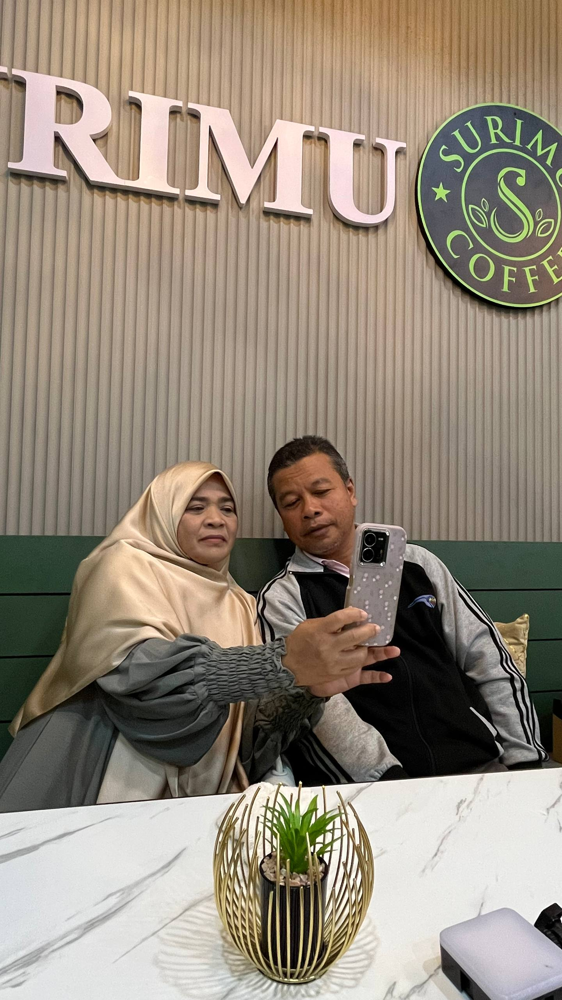
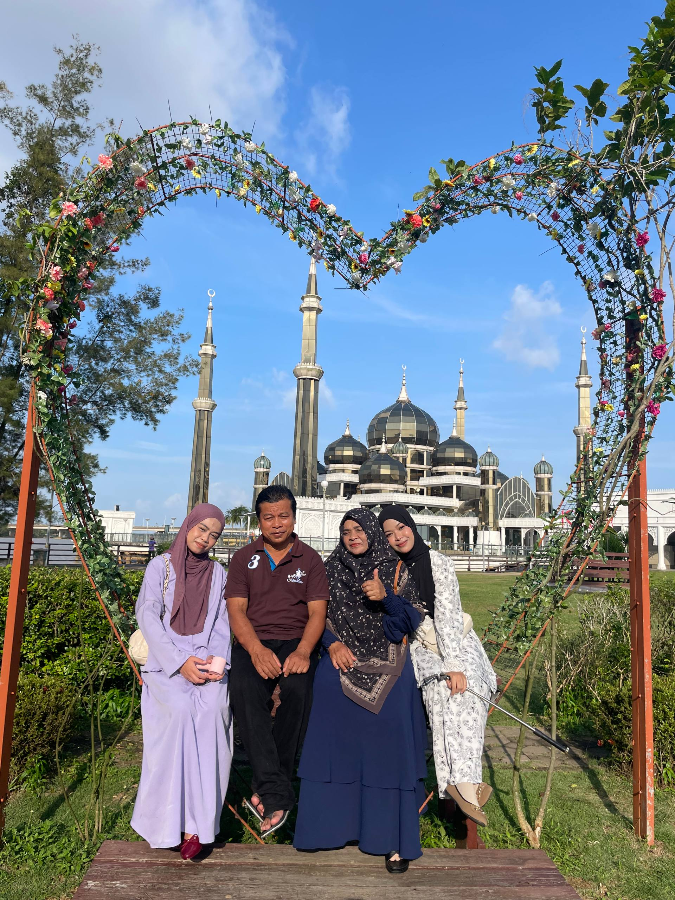
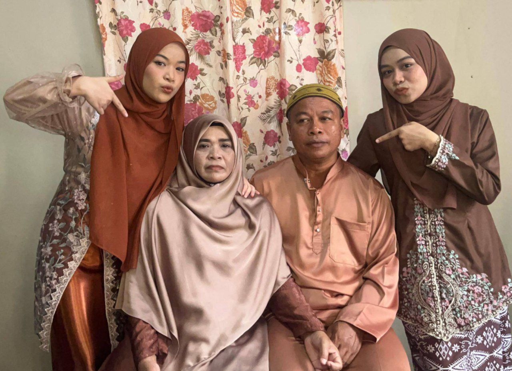
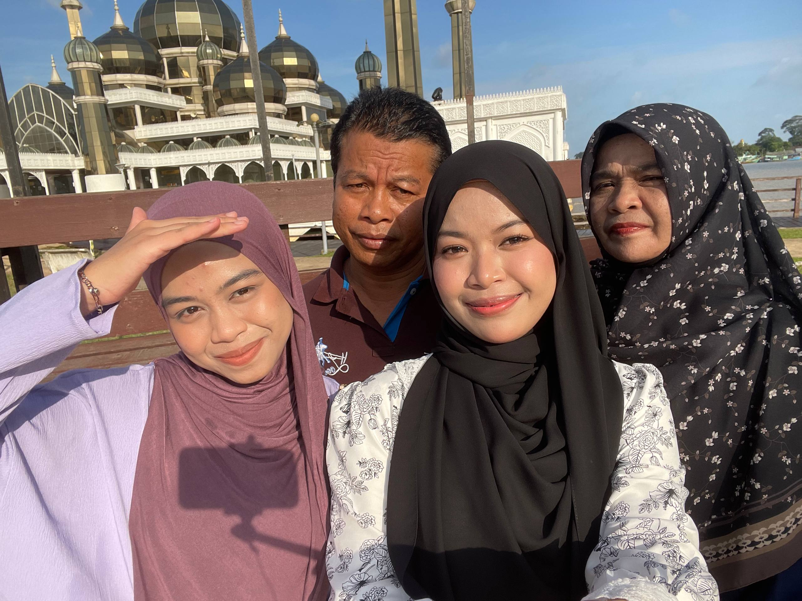
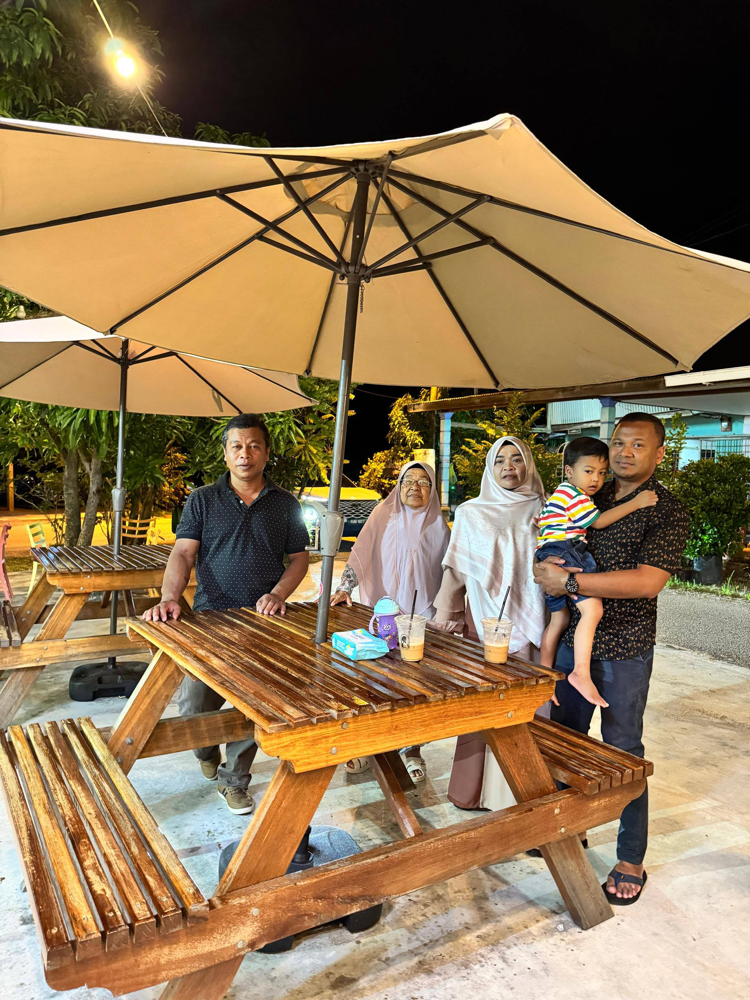
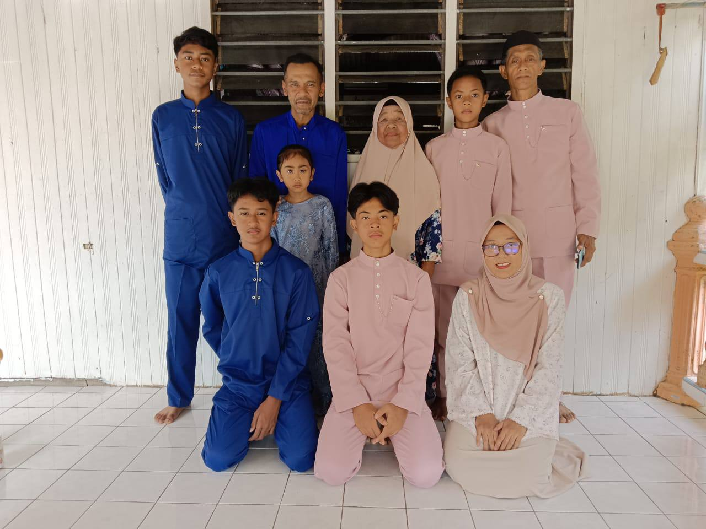
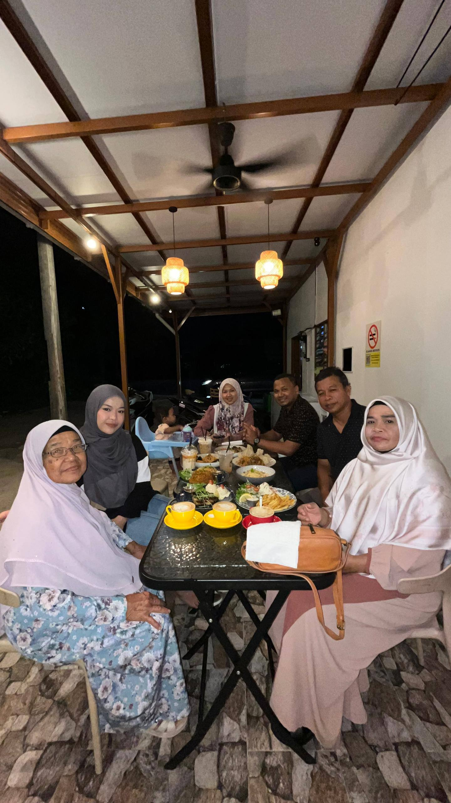
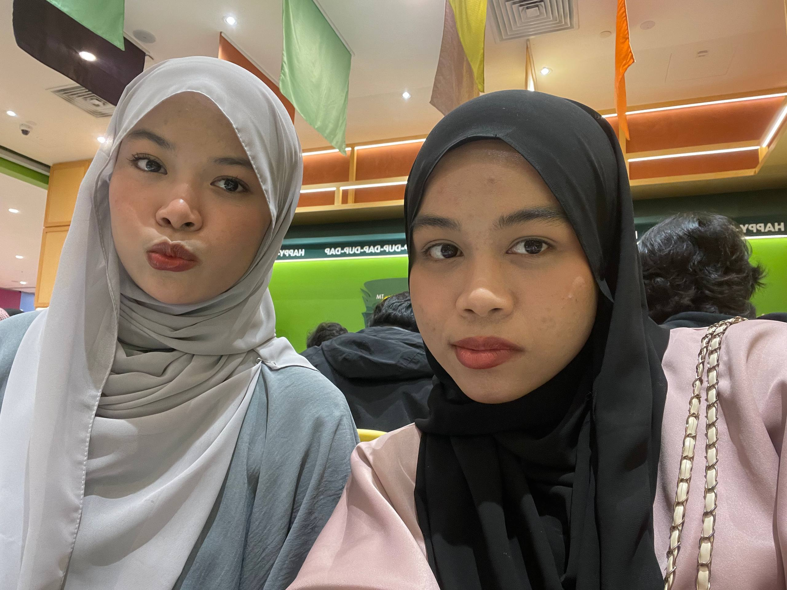
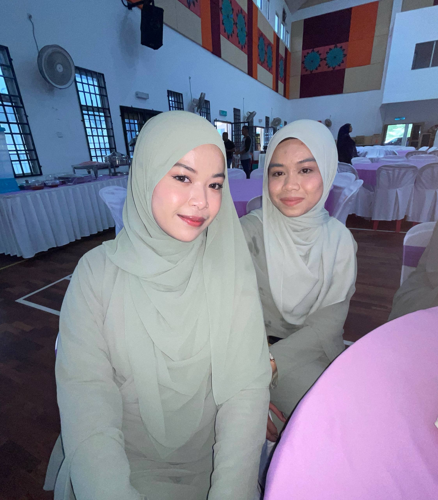

My family is small but very precious to me. There are four of us in total: my parents, my elder sister, and myself as the youngest child. Both of my parents come from Terengganu, a place rich in culture and traditions, and they have always carried those values into our home. I have one sibling, my sister, who has already completed her studies and is now working. At the moment, I am the only one still pursuing my education, continuing my journey at UiTM, with the hope of making my family proud.





Although our immediate family is just the four of us, my parents come from very large families, which means I grew up surrounded by many uncles, aunts, and cousins. Family gatherings are always lively, filled with laughter, stories, and the warmth of togetherness. I am truly grateful to be blessed with this family. Their love, support, and guidance have shaped me into who I am today, and I cherish every moment we share.